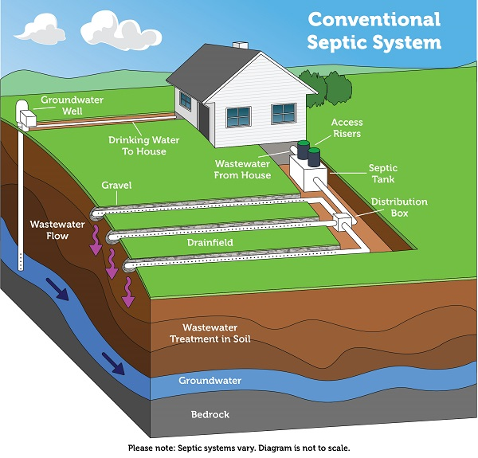

Conventional System
The most widely used septic system, consisting of a septic tank and a subsurface drainage field. Wastewater flows by gravity from the tank to the leach field where natural soil treatment occurs.
Lowest Cost
Most affordable option
Simple Design
Fewer components to fail
Requires Space
Large drain field needed
Soil Dependent
Needs permeable soil
Single-family homes
Rural properties
